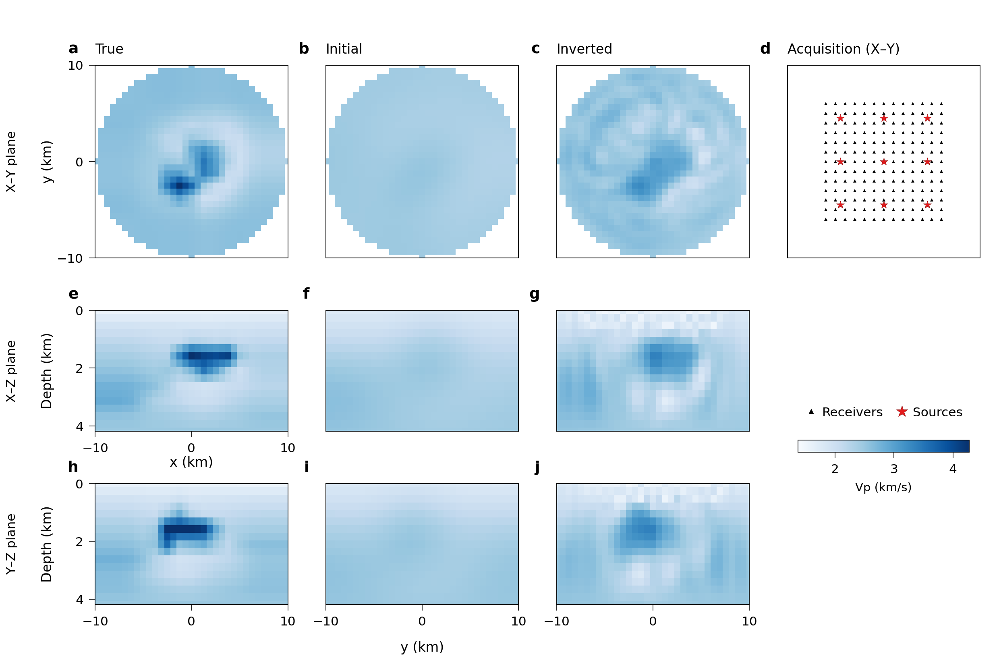
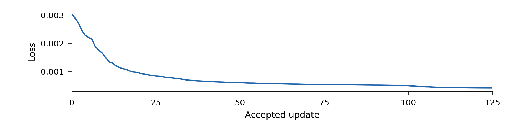

Salt-model recovery
DiffAxiSEM3D-native · 125 accepted updates

Horizontal slice at 2.09 km depth. Vertical slices at y = 0 and x = 0 use
3× vertical exaggeration. All panels share a 1.3775–4.277 km/s scale.
The resampled SEG/EAGE salt model is © 1997 Society of Exploration Geophysicists
(CC BY 4.0).
Loss
